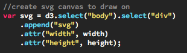
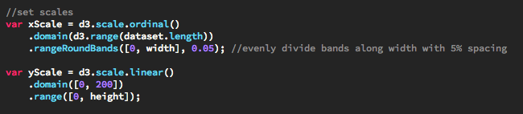
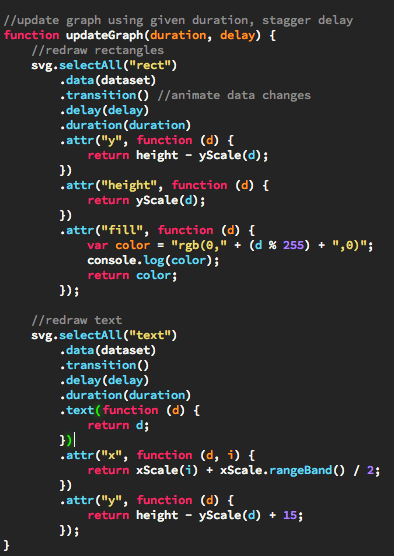

Try clicking the buttons to generate a new random data set and/or apply a transition animation.
D3 is a JavaScript library much like jQuery. Both fundamentally allow you to easily interact with and edit the DOM in order to make complex web elements. They both also build upon the basic framework of web design: HTML, CSS. They also allow you to dynamically create SVGs (scalable vector graphics). Both work mostly through the use of “selectors.” Selectors are used to pinpoint what DOM elements you want to make changes to. The syntax for jQuery and D3 are very similar as well:
jQuery: $(“#element_id)
D3: d3.select(“#element_id)
D3 and JQuery often chain method calls together:
jQuery: $(“#element_id).append(some_element).css(“margin”, “100px”);
D3: d3.select(“#element_id).append(some_element).style(“margin”, “100px”);
The main difference between D3 and jQuery is that D3 is data-driven. Generally the data is bound to the element, callbacks are defined, and the D3 library does the rest. However with jQuery you would have to directly edit each node on the DOM tree. To add data to a D3 element, you use the data() method. In this example we used a JavaScript array populated with random integer values between 20 and 200 as our data.
Here is an example of using selectors in D3 to add a SVG element and giving it some basic attributes:
D3 has functions to scale data to fit within given dimensions. For a scale to work, it needs both an input domain and an output range. The input domain is the range of values that are given as input to the scale (generally the minimum data value to the maximum). The output range is the range of values you want to use as display values (generally given in pixels). There are also different types of scales. Linear is probably the most straight-forward and common. Ordinal is also commonly used for nonquantitative data values like categories. Our chart uses both in definine X and Y scales. Range bands are a way of dividing a continuous range (like a linear scalue uses) into discrete ranges (as ordinal scales use). So to make things easier on us, we use the roundRangeBands() method to define the range for our ordinal scales.
These scales can be refrenced elsewhere in our code, to automatically do the math for use to map a data value or index to an element's attribute value. The code in the next section will show this in more detail.
As we have seen D3 allows you to interact with the style attributes of elements. It goes a step further by building in transitions, which smoothly changes the attributes of elements using animations. Adding a transition to a change is as simple as adding one line of code: transition().
Once you have added transitions, animations can be further customized using the duration() call. Just put how long the transition should take in milliseconds inside the parentheses. You can even delay transition with a call to delay().
Below is an example in which we update the chart’s dataset and transition to the new data values:
